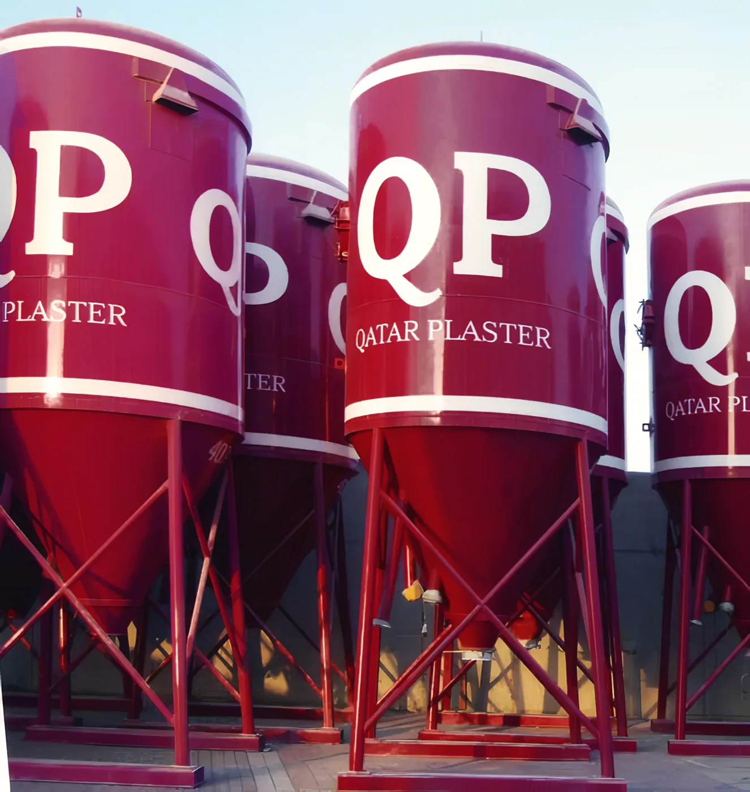

الرئيسية / من نحن
مصنع في مسيعيد
Qatar Plaster (QP) مصنع منتجات جافة جاهزة في مدينة مسيعيد الصناعية. نقدم تشكيلة واسعة من المنتجات أساسها الإسمنت والجبس لقطاع البناء.

الصوامع والماكينات
نقدم نظام صوامع حديث مع نقل هوائي للخلطة الجافة، وماكينات تطبيق أوتوماتيكية لقطاع البناء.
المونة الجافة المصنّعة في المصنع أكثر ثباتاً وإنتاجية من المونة المخلوطة في الموقع. كل منتج يُصنع بدقة ليحافظ على الجودة والثبات. نوصل المنتجات للموقع بالصوامع أو الأكياس.
ماكينات التطبيق عندنا من PFT ألمانيا. الخلط بالماكينة يعطي خلطة متجانسة ودقيقة مع الماء، ويلغي الأخطاء اللي تصير في الخلط اليدوي.



سياسة الجودة
منتجات QP مصممة ومصنّعة حسب مواصفات BS / EN / DIN / ASTM.
منشأة التصنيع الحديثة ومراقبة الجودة الصارمة تضمن جودة المنتجات وثباتها. مختبر الفحص مجهّز بالكامل ويشتغل على مدار الساعة، والمراقبة تبدأ من اختيار المواد الخام إلى المنتج النهائي.
نقدر نصمم ونطوّر ونصنع منتجات حسب طلب العميل، وفريق المبيعات والجودة ومهندسي الموقع يدعمونك وقت ما تحتاج.
باختصار
- الشركةQatar Plaster Factory L.L.C
- المصنعمدينة مسيعيد الصناعية، قطر
- العنوان البريديص.ب 82201، الدوحة
- المنتجاتطبقات ربط، لياسة ورندر إسمنتي، رندر ملوّن، لياسة جبسية، مونة بناء، لاصق بلاط، مونة تسوية، مونة ترميم، جراوت، لاصق عزل حراري
- المواصفاتBS / EN / DIN / ASTM
- التوريدصوامع 20 م³ أو أكياس ورقية 25–50 كغ على طبالي
- الماكيناتPFT، ألمانيا
عندك سؤال عن منتج أو توصيل؟
اتصل بالمصنع: +974 4476 1544
أو راسلنا على qp@qatarplaster.com · الجوال +974 5530 5140
تصفّح المنتجات